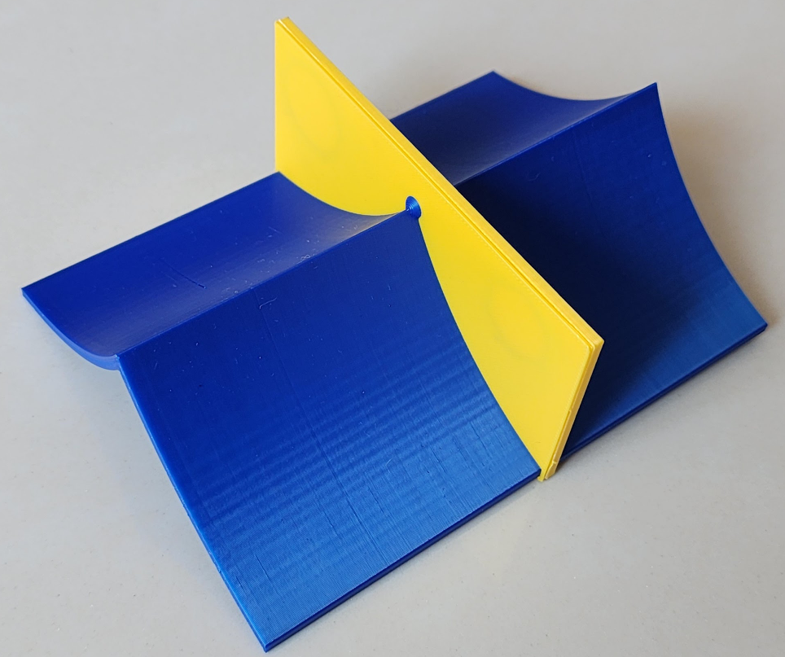
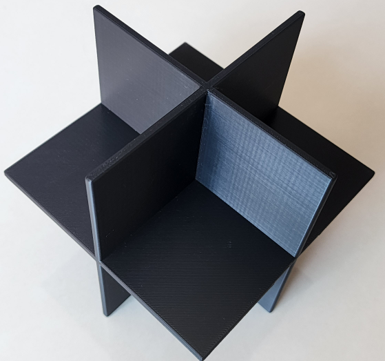

Modelagem e Impressão 3D - Superfícies Singulares

Singularity $H_2$: $Y^5 + X^3Y - tXY^3 + 3XY^2Z - 3cY^4 + tX^2Z + 2ctXY^2 - 3cXYZ + 3c^2Y^3 - t^2Y^2Z + 2tYZ^2 - Z^3 - c^2tXY - c^3Y^2 + 2ct^2YZ - 2*ctZ^2 - c^2t^2Z=0$, $|c| < (2/3)t^{(3/2)}$

Whitney umbrella: $x^2-y^2z = 0$

Whitney cusp: $y^2 + x^3 -z^2x^2 = 0$
Singularidade do tipo $A_3$ (Swallowtail ou rabo de andorirna): $256z^3 + 128x^2z^2 + 16x^4z + 144xy^2z + 4x^3y^2 + 27y^4 = 0$
[V. I. Arnold, The Theory of Singularities and Its Applications, Cambridge University Press, 1993.]

Whitney cusp: $y^2 + x^3 -zx^2 = 0$

Singularidade do tipo $A_{1,2}$ (interseção transversal da dobra $A_1$, com o eixo cuspidal $A_2$): $z(x^2-y^3)=0$

Singularidade do tipo $A_{1,1,1}$ (interseção transversal de três dobras $A_1$): $xyz=0$